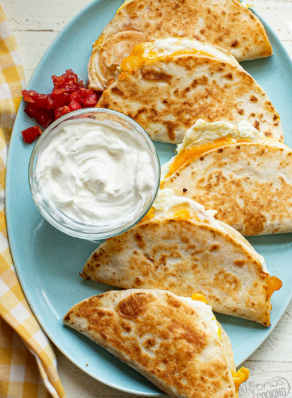

Quesadilla

Description
Quesadillas are another easy dish to make, full of cheesy goodness. They also don't require many ingredients, though you can always add more to your dish to spice it up.
Bellow, we list what ingredients you'll need, and the steps you can take to make your very own delicious quesadilla at home!
Ingredients
- Flour tortillas
- Shredded cheese. We recommend a mexican blend, though cheddar or pepper jack are also good options.
- Butter
- Salsa
- Guacamole
- Sour cream
Steps
- Grab a skillet/pan. Turn the heat to medium high.
- Add a tablespoon of butter once the pan has warmed up.
- Place a tortilla in the pan
- Add a layer of cheese onto the tortilla, Place another tortilla ontop.
- Let tortilla sit for a minute or two, until the cheese has started to melt and the bottom tortilla has started to brown/crisp up.
- Once cheese has begun melting, and bottom tortilla coloring, grab a spatula and flip the quesadilla over.
- After another minute or two, when the other tortilla has started to brown and the cheese has melted, take out the quesadilla and slide it onto your plate. Turn off the stovetop.
- Cut the tortilla with a knife of pizza cutter. Add toppings as desired.
- Viola, you have a functional (and ideally tasty) quesadilla ready to be eaten!